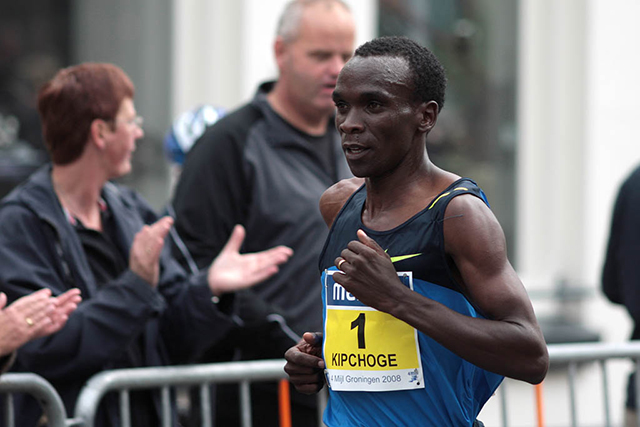
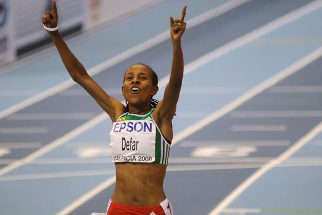
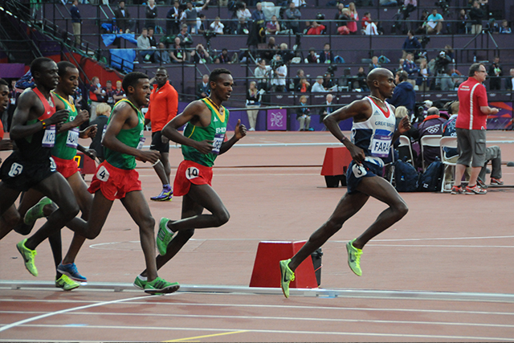
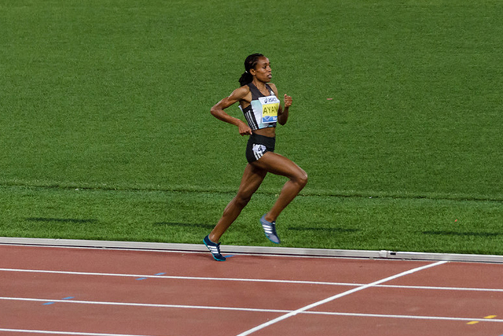
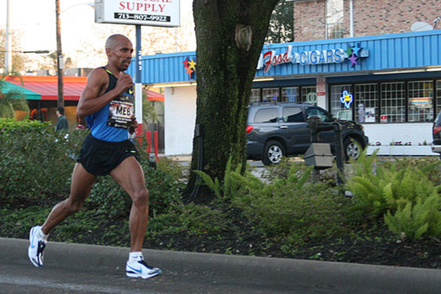
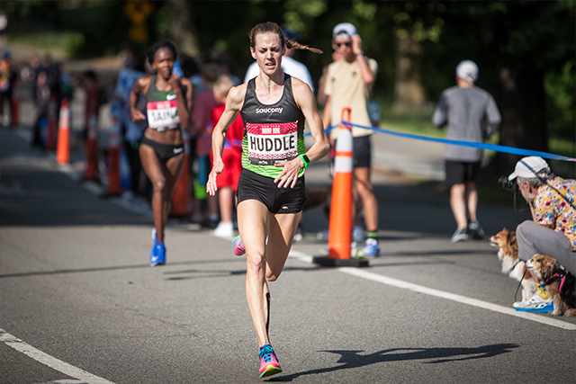
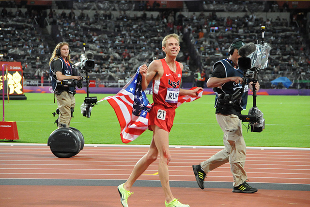
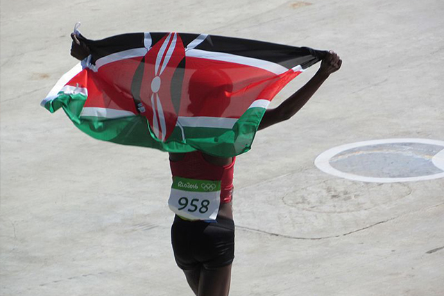
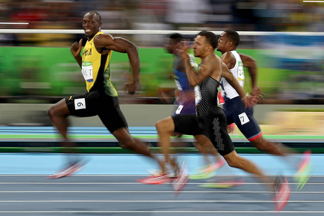

Ecco a voi una classifica dei migliori corridori di tutti i tempi:
Eliud Kipchoge
Vincitore dell'oro nell'evento della Maratona delle Olimpiadi di Rio, Eliud è arrivato pericolosamente vicino a battere il segno di due ore sulla maratona. A malapena oltre quattro minuti in due ore, è in corsa per rompere quella mitica barriera del tempo.
Proviene dal Kenya ed è specializzato nelle gare di 3000 metri, 5.000 metri e maratona. Ha anche vinto medaglie alle Olimpiadi del 2004 e del 2008, rendendolo un atleta molto decorato.

Meseret Defar
Il cognome Meseret, Defar, significa "grassetto" in amarico, che è la sua lingua madre. Bold è il modo migliore per descrivere il modo in cui è entrata in scena nel 2004, conquistando l'oro olimpico nei 5.000 metri. Nel corso della sua carriera ha eccelso i 5.000 metri, vincendo due medaglie d'oro e un bronzo. Era anche una feroce concorrente nei 3000 metri.

Mo Farah
Uno dei più grandi atleti che il Regno Unito abbia mai prodotto, Mo è un famoso corridore a distanza. È anche uno dei più dominanti.
Ha vinto sia i 5.000 che i 10.000 metri alle Olimpiadi di Londra del 2012. Lo ha seguito vincendo gli stessi titoli nei campionati europei di atletica leggera nel 2014. Come se ciò non bastasse, ha portato di nuovo a casa l'oro nei 5.000 e 10.000 metri nelle Olimpiadi di Rio 2016, sigillando il suo status di uno dei i più grandi corridori di distanza di tutti i tempi.

Almaz Ayana
Nel 2016, Almaz Ayana ha battuto un record di 23 anni nei 10.000 metri. Lo ha rotto sul più grande palcoscenico del mondo, le Olimpiadi, con un tempo di 29 minuti, 17 secondi e quarantacinque millisecondi. Ha battuto il record precedente di ben 14 secondi. Successivamente è stata nominata una delle migliori runner dell'anno nel 2016, insieme alla leggenda dello sprint Usain Bolt, dall'International Association of Athletics Federations.

Meb Keflezighi
Uno dei più noti corridori di distanza di tutti i tempi, Meb potrebbe aver superato il suo picco, ma è ancora importante per lo sport. È l'unico atleta nella storia a vincere la Maratona di New York, la Maratona di Boston e una medaglia olimpica.
È più noto per i suoi successi in varie maratone nel corso degli anni. Ha vinto la Boston Marathon 2014, che è stata una gara estremamente emozionante a causa dei bombardamenti sul traguardo. Ha rivolto la sua attenzione ora a scrivere, parlare e allenare i corridori a tutto il loro potenziale.

Molly Huddle
Molly Huddle è uno dei migliori corridori americani di distanza in questo sport. È diventata una americana 10 volte in atletica leggera, quindi ha continuato a battere il record americano di 10.000 metri alle Olimpiadi del 2016. Dopo quell'imponente finale ha cambiato marcia e si è allenata per la sua prima maratona di New York City, dove è arrivata terza. Probabilmente avrà più podi nelle maratone nel prossimo futuro.

Galen Rupp
Dopo essere stato elogiato da ESPN due volte come accademico all-american e aver vinto cinque incredibili titoli di atletica leggera NCAA nel suo ultimo anno all'Università dell'Oregon, Rupp ha continuato a competere sul palcoscenico mondiale. Ha partecipato a tre giochi olimpici e gareggia nei 5.000 metri, nei 10.000 metri e nella maratona. Ha portato a casa un argento per gli Stati Uniti nei 10.000 metri e un bronzo nella maratona.
La maggior parte dei migliori corridori del mondo hanno battuto un record mondiale ad un certo punto.

Jemima Jelagat
Aspettatevi di vedere molto di più di questo giovane corridore nel prossimo futuro. È nata nel 1993 e sta già battendo i record del mondo. Nella sua quinta gara di mezza maratona, il keniota ha battuto il record del mondo di quattordici secondi. Sulla strada per stabilire il record è anche riuscita a battere i record mondiali di 10, 15 e 20 chilometri. Ha anche un futuro brillante nelle gare da 5.000 e 10.000 metri.

Usain Bolt
Ridendo verso traguardi sorprendenti, questo velocista lungo e slanciato infrange i confini ogni volta che tocca la pista. Il suo carisma lo ha lanciato dalla fama alla celebrità ed è diventato uno degli atleti più famosi al mondo.
È l'uomo più veloce della terra, battendo un'impressionante competizione per tre partite olimpiche di fila per vincere medaglie d'oro nelle gare da 100 e 200 metri. Ha anche tre medaglie d'oro con i suoi compagni di squadra giamaicani nella staffetta 4 x 100 metri.

Allyson Felix
Nel 2012, Allyson Felix ha tenuto un'esibizione Usain Bolt dominando gli eventi di sprint alle Olimpiadi di Londra. Ha vinto medaglie d'oro nell'individuo da 200 metri, relè da 100 metri e relè da 200 metri. Quattro anni dopo difese nuovamente le sue medaglie d'oro a Rio. Ha anche vinto più medaglie d'oro in ciascuno di quegli eventi durante i campionati mondiali di atletica leggera.